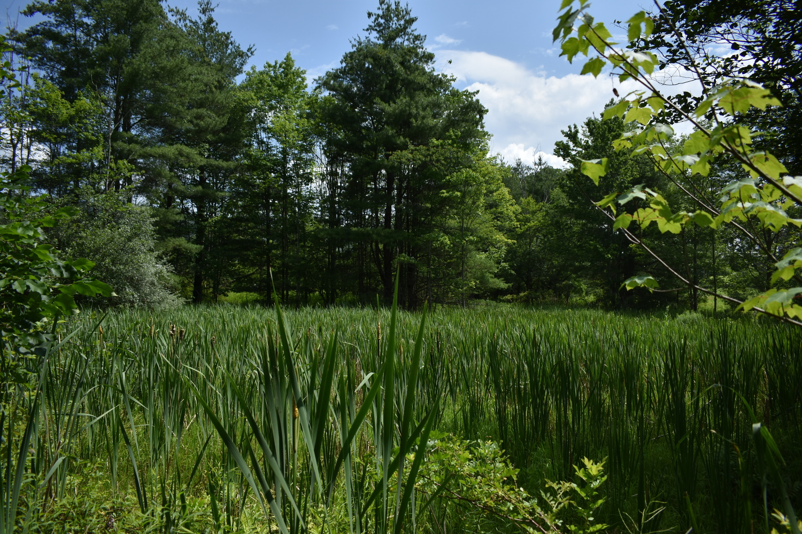

Concept
The Calamus Marsh is a small, 1-acre wetland that lies between the Wet Meadow on its East and Riparian North on its West, where the stream enters the property. The North and South borders are one of ChicoryLane's property boundaries and a curve in the stream. It is a perpetual marsh fed by a small 2-foot year-round stream flowing in from a neighboring pasture and flowing out into Brush Mountain Run. On two sides, a narrow puncheon walkway provides access. The marsh, itself, is largely American Calamus with a sprinkling of Loosestrive that requires annual maintenance. Other species include Quaking Aspen, White Pine, American Plum, Speckled Alder, and several invasives including Honeysuckle and Multiflora Rose.
Steps
- Select a site
- The segment of the wetland noted above, selected (complete)
- Record it
- Plan
- Plant Palettes
- Species reductions
- Species increases
- Species introductions
- Planting Map
Implement
- Sequence of actions
- Resources needed not currently available
- Timeline
Assess
- Narrative
- Data
- Notes